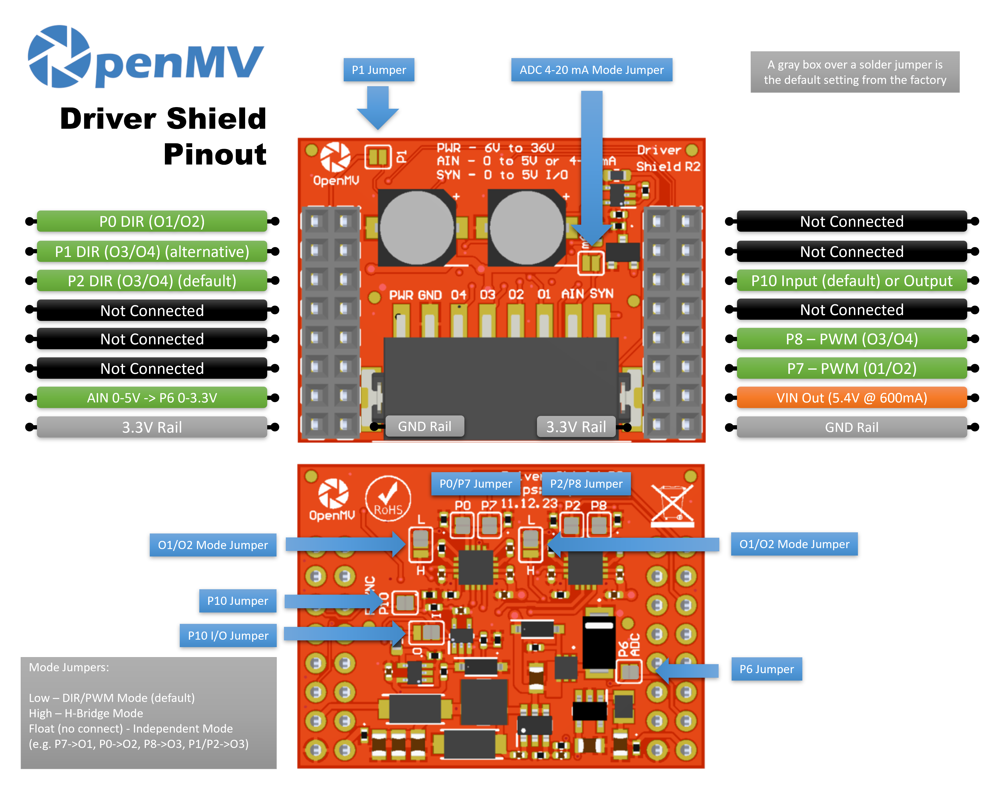

Driver Shield¶
Driver Shield управляет двумя моторами по 3 А или четырьмя независимыми линейными драйверами по 1,5 А от источника питания в широком диапазоне 6-36 В, обеспечивая OpenMV Cam надёжным интерфейсом управления моторами с защитой от переполюсовки и выбросов напряжения.

Полный datasheet, фотографии и информацию для заказа смотрите на странице продукта Driver Shield.
Основные характеристики¶
Два драйвера моторов по 3 А ИЛИ четыре линейных драйвера по 1,5 А, 6-36 В
Защита входа от переполюсовки и переходных выбросов напряжения
Вход ADC 0-5 В с защитой от перенапряжения ±36 В
Цифровой ввод-вывод 0-5 В для триггеров синхронизации камеры, с защитой от короткого замыкания
Распиновка¶
{kind=link}

Описание выводов¶
Вывод |
Функция |
|---|---|
P0 |
DIR для пары выходов O1/O2 |
P1 |
DIR для пары выходов O3/O4 (альтернативный) |
P2 |
DIR для пары выходов O3/O4 (по умолчанию) |
P6 |
Считывание AIN с преобразованием уровня (0–3,3 В на P6) |
P7 |
PWM для пары выходов O1/O2 |
P8 |
PWM для пары выходов O3/O4 |
P10 |
SYN — цифровой ввод-вывод с открытым стоком на клеммной колодке |
PWR in |
Широкий вход 6–36 В на клеммной колодке (с защитой от переполюсовки) |
AIN in |
Аналоговый вход на клеммной колодке |
VIN out |
5,4 В при токе до 600 мА от встроенного стабилизатора |
Шина 3,3 В |
Питает встроенную электронику шилда |
Шина GND |
Общая земля |
Примечание
AIN защищён от перенапряжения до ±36 В и по умолчанию работает как вход напряжения 0–5 В, масштабируемый до 0–3,3 В на P6. Замкните перемычку режима 4–20 мА на лицевой стороне шилда, чтобы переключить AIN на токовый вход 4–20 мА.
Примечание
SYN — это цифровая линия с открытым стоком, подтянутая к 3,3 В со стороны камеры и к 5 В со стороны клеммы SYN. По умолчанию это вход — шилд преобразует уровень 0–5 В на SYN до 0–3,3 В на P10. Измените положение паяной перемычки на плате, чтобы переключить P10 в режим выхода, преобразуя уровень 0–3,3 В на P10 до 0–5 В на SYN.
Примечание
Каждый из выводов P0, P1, P2, P6, P7, P8 и P10 можно освободить для постороннего использования. P0, P2, P6, P7, P8 и P10 по умолчанию подключены через паяные перемычки на обратной стороне — разомкните перемычку на любом выводе, который хотите освободить. P1 по умолчанию отключён: замкните его перемычку на лицевой стороне, чтобы направить DIR для O3/O4 на P1 (и разомкните перемычку P2 на обратной стороне, чтобы освободить P2).
Примечание
Две перемычки режима на обратной стороне шилда — по одной на каждый H-мост — независимо устанавливают каждую пару выходов в один из трёх режимов. На каждой перемычке есть маркировка L и H, показывающая, какая сторона выбирает какое состояние:
Low (по умолчанию) — режим DIR/PWM: один вывод DIR + один вывод PWM на мост.
High — режим H-моста: оба вывода управляют мостом напрямую через таблицу истинности двух входов микросхемы.
Float (без подключения) — независимый режим: каждый вывод становится отдельным линейным драйвером, направленным на один выход.
Каждый DRV8876 ограничен по току до 3 А суммарно на микросхему — это 3 А через один мост (режим DIR/PWM или H-моста) либо 1,5 А на выход, разделённые между двумя выходами (независимый режим).
Использование¶
Режим DIR/PWM (по умолчанию)¶
Управляйте коллекторным двигателем постоянного тока на паре выходов O1/O2 — задайте направление на P0 и подайте PWM-сигнал скорости на P7. Цикл ниже плавно увеличивает скважность до полной скорости и обратно, затем меняет направление и повторяет:
from machine import Pin, PWM
import time
direction = Pin("P0", Pin.OUT)
speed = PWM(Pin("P7"), freq=20_000, duty_u16=0)
def ramp(target):
for duty in range(0, target, 1024):
speed.duty_u16(duty)
time.sleep_ms(10)
for duty in range(target, -1, -1024):
speed.duty_u16(duty)
time.sleep_ms(10)
while True:
direction.value(1) # forward
ramp(65_535)
direction.value(0) # reverse
ramp(65_535)
Два H-моста также могут управлять биполярным шаговым двигателем — удерживайте оба канала PWM на полной мощности и переключайте выводы DIR по четырёхфазной последовательности:
from machine import Pin, PWM
import time
dir12 = Pin("P0", Pin.OUT)
dir34 = Pin("P2", Pin.OUT)
PWM(Pin("P7"), freq=20_000, duty_u16=65_535) # full drive on O1/O2
PWM(Pin("P8"), freq=20_000, duty_u16=65_535) # full drive on O3/O4
SEQUENCE = [(1, 1), (0, 1), (0, 0), (1, 0)]
def step(forward=True):
for a, b in SEQUENCE if forward else reversed(SEQUENCE):
dir12.value(a)
dir34.value(b)
time.sleep_ms(5)
while True:
for _ in range(50): # ~1 revolution forward (200 phases)
step()
for _ in range(50): # ~1 revolution backward
step(forward=False)
Режим H-моста¶
Когда перемычка режима установлена в high, оба вывода моста управляют H-мостом напрямую. Для O1/O2 таблица истинности такова:
(P0, P7) = (L, L)→ свободный ход (выходы Hi-Z)(P0, P7) = (L, H)→ вперёд (O1 = H, O2 = L)(P0, P7) = (H, L)→ назад (O1 = L, O2 = H)(P0, P7) = (H, H)→ торможение (оба выхода в низком уровне)
(O3/O4 следует той же таблице с P1/P2 и P8.) Цикл ниже прогоняет мотор через вперёд → торможение → назад → свободный ход на паре выходов O1/O2:
from machine import Pin
import time
p0 = Pin("P0", Pin.OUT)
p7 = Pin("P7", Pin.OUT)
def drive(a, b):
p0.value(a)
p7.value(b)
while True:
drive(0, 1) # forward
time.sleep(1)
drive(1, 1) # brake
time.sleep_ms(500)
drive(1, 0) # reverse
time.sleep(1)
drive(0, 0) # coast
time.sleep_ms(500)
Любой из выводов можно заменить каналом machine.PWM для пропорционального управления — например, (P0=0, P7=PWM) даёт вперёд/свободный ход на скважности PWM, а (P0=1, P7=PWM) даёт назад/торможение при (100 % − duty). Цикл ниже плавно увеличивает и уменьшает скважность, удерживая P0 на уровне 0 (вперёд/свободный ход):
from machine import Pin, PWM
import time
p0 = Pin("P0", Pin.OUT, value=0)
p7 = PWM(Pin("P7"), freq=20_000, duty_u16=0)
while True:
for duty in range(0, 65_536, 1024):
p7.duty_u16(duty)
time.sleep_ms(10)
for duty in range(65_535, -1, -1024):
p7.duty_u16(duty)
time.sleep_ms(10)
Независимый режим¶
Когда перемычка режима в плавающем состоянии, каждый вывод становится отдельным линейным драйвером, направленным на один выход — удобно для соленоидов, реле или любой включаемой/выключаемой нагрузки, которой не нужен H-мост. Соответствие: P7 → O1, P0 → O2, P8 → O3 и P1 (или P2) → O4:
from machine import Pin
import time
outputs = [
Pin("P7", Pin.OUT), # O1
Pin("P0", Pin.OUT), # O2
Pin("P8", Pin.OUT), # O3
Pin("P2", Pin.OUT), # O4
]
while True:
for o in outputs: # walk a single high pulse across O1–O4
o.value(1)
time.sleep_ms(200)
o.value(0)
Любой из четырёх выводов также можно использовать как PWM через machine.PWM для пропорционального управления — например, поочерёдно плавно увеличивать и уменьшать каждый выход:
from machine import Pin, PWM
import time
outputs = [
PWM(Pin("P7"), freq=1_000, duty_u16=0), # O1
PWM(Pin("P0"), freq=1_000, duty_u16=0), # O2
PWM(Pin("P8"), freq=1_000, duty_u16=0), # O3
PWM(Pin("P2"), freq=1_000, duty_u16=0), # O4
]
while True:
for o in outputs:
for duty in range(0, 65_536, 1024):
o.duty_u16(duty)
time.sleep_ms(5)
for duty in range(65_535, -1, -1024):
o.duty_u16(duty)
time.sleep_ms(5)
Прочий ввод-вывод¶
Считывайте вход AIN с клеммной колодки через вывод P6 с преобразованием уровня:
from machine import ADC
import time
ain = ADC("P6")
while True:
v = ain.read_u16() * 3.3 / 65535
print("AIN:", v * (5.0 / 3.3), "V")
time.sleep_ms(100)
Реагируйте на спадающий фронт на линии SYN — например, чтобы синхронизировать камеру с другим устройством, притягивающим SYN к низкому уровню:
from machine import Pin
def on_sync(pin):
print("SYN falling edge")
syn = Pin("P10", Pin.IN)
syn.irq(on_sync, Pin.IRQ_FALLING)